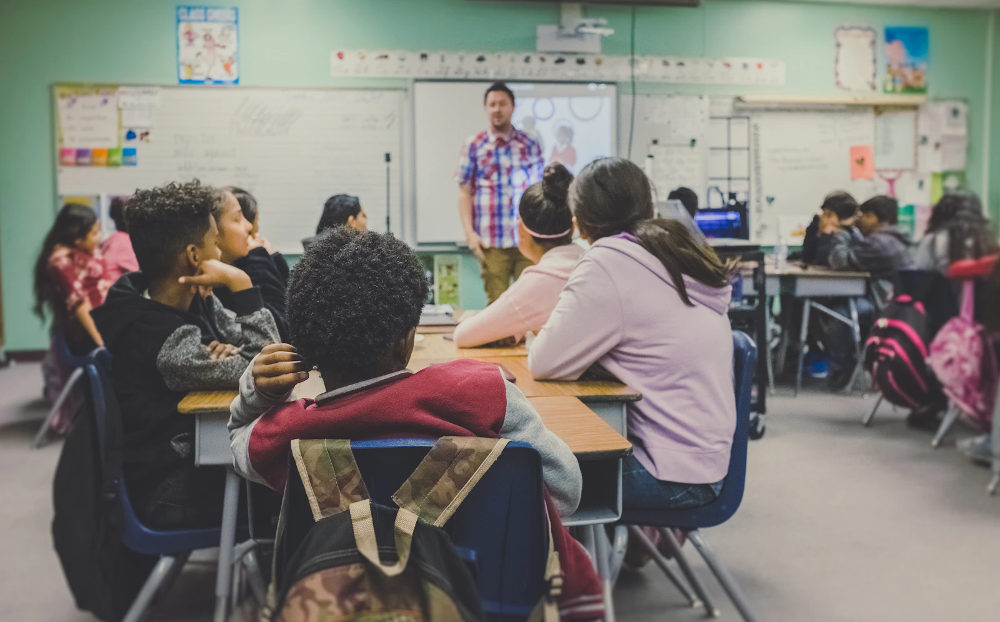

PP1 & PP2
PP1 & PP2
Small steps. Big discoveries.
Play, stories and hands-on discovery help young children find their voice and feel at home in school.
Explore early years
A connected journey of discovery, strong foundations and growing independence.
Our fictional programme reflects a Kenyan school setting, from PP1 and PP2 through Grades 1–9.
PP1 & PP2
Play, stories and hands-on discovery help young children find their voice and feel at home in school.
Explore early years Grades 1–6
Grades 1–6
Reading, mathematics, creative arts and practical enquiry make room for every child's growing interests.
Explore primary schoolDeeper study, collaborative projects and thoughtful guidance build independence with a steady foundation.
Explore junior school
Stories, songs, movement and sensory discovery build the foundations of language, early numeracy and friendships. Children practise small everyday tasks that help them grow more independent.
A balanced day brings together guided activities, imaginative play, outdoor movement and time to rest. Families receive useful observations about what their child is exploring.
Ask about early yearsLanguage and mathematics provide strong foundations for learning across the curriculum. Science, social learning, creative arts and practical projects help children connect classroom ideas with the world around them.
Teachers use discussion, worked examples and regular practice to see what learners understand. Feedback focuses on progress and the next useful step.
Explore a learner's school portal
Junior school combines deeper subject knowledge with practical enquiry. Learners develop their reasoning in mathematics and sciences, communicate ideas in languages, and explore technology, arts and community projects.
Assignments, collaborative work and guided reflection build study habits. Teachers and families stay connected through learning reports and class resources.
Discuss junior school admissionsEvery child needs a chance to discover an interest beyond their exercise book.
Team games, athletics and active play encourage coordination, cooperation and fair competition.
Art, music and drama give children different ways to express ideas and share their work.
Library sessions and reading circles help learners choose books, discuss stories and develop a lifelong habit.
Practical challenges and community-minded projects connect learning with responsibility.
Explore the classrooms, talk through the school day and discover which learning stage feels right for your family.